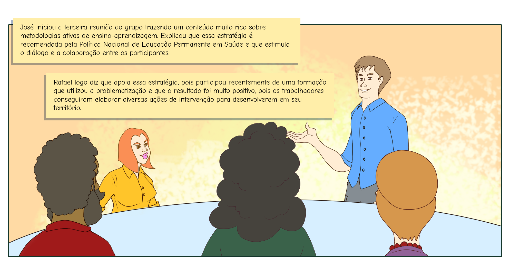
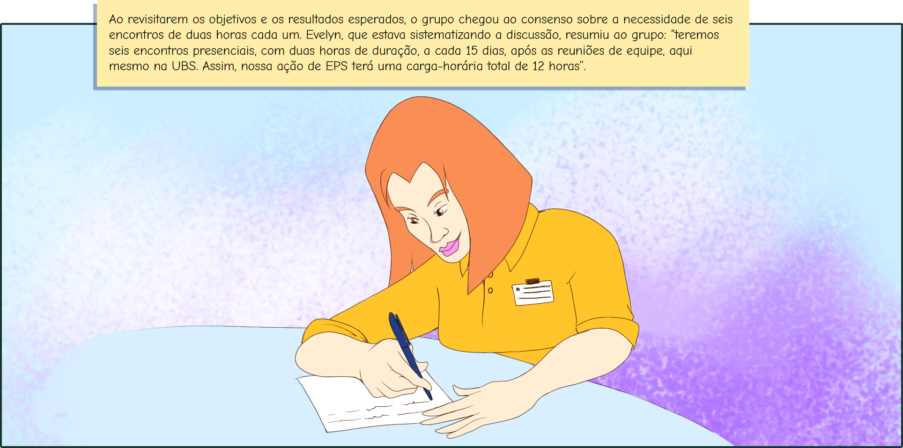
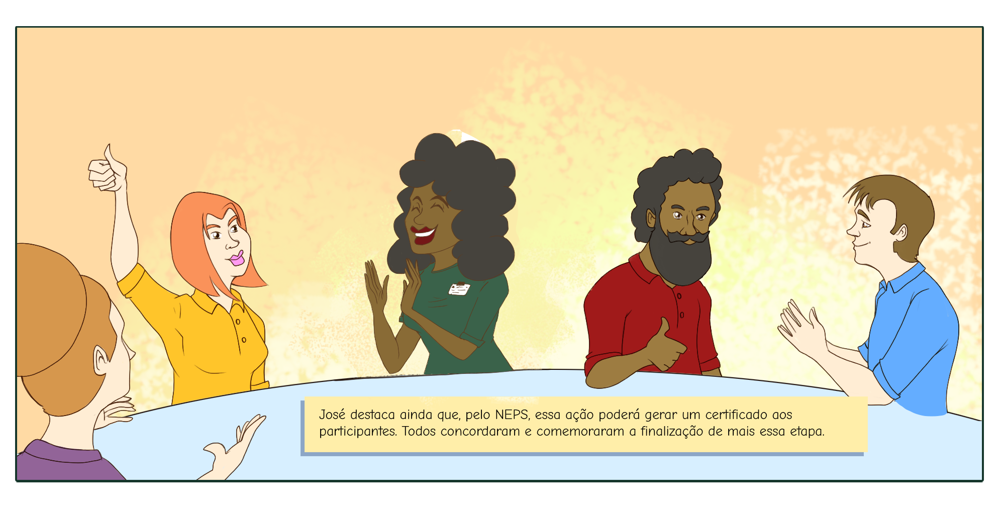

Para a avaliação, os seguintes instrumentos podem ser utilizados: questionários, roda de feedback, entrevistas, exercícios, grupos focais, planos de intervenção, entre outros. Ao propor a avaliação educacional, é recomendável que você estabeleça atividades antes (expectativas, conhecimentos prévios), durante (avaliação ao final de cada encontro) e depois (resultados) da ação concluída.
Agora, vejamos como a equipe da UBS jacarandá definiu sua proposta de avaliação.



